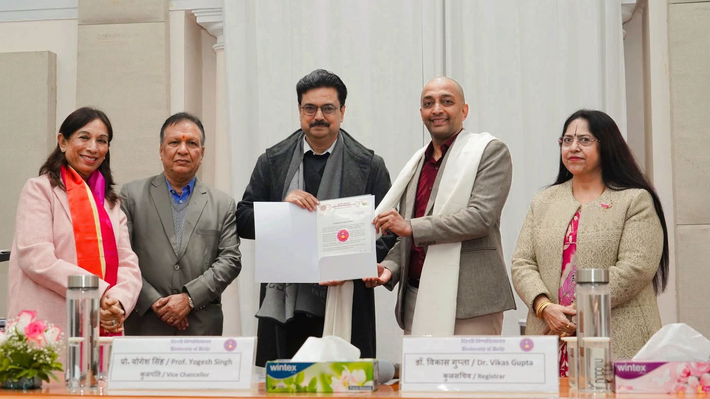

Sri Venkateswara College is a constituent college of the University of Delhi established in 1961 in New Delhi, India.[1] It is managed by Tirumala Tirupati Devasthanams and UGC and awards degrees under the purview of the University of Delhi. The college offers courses both at the undergraduate level and the postgraduate level. Vocational courses and short-term add-on courses that serve as significant supplement to the academic profiles of the students are offered by the college. Admissions are done purely based on merit and as per the Delhi University norms. It is ranked 14th among colleges in India by NIRF as of 2022.[2] Subsequently, in 2024 Outlook ranked it 6th in the Humanities stream, 9th in the Science stream and 13th in Commerce stream.
